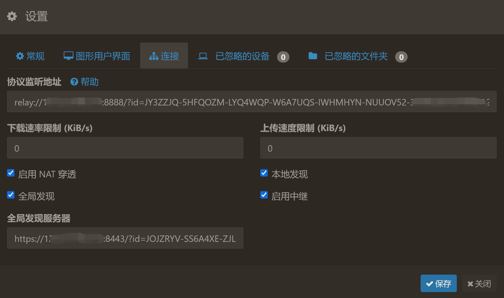
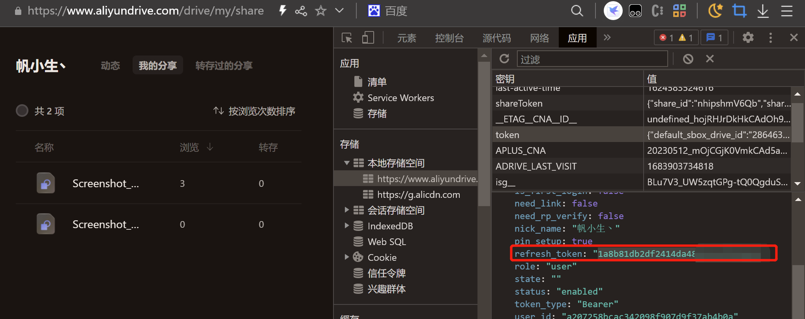

NAS工具
Syncthing
安装与使用
github下载地址 https://github.com/syncthing/syncthing/releases
Windows界面软件: SyncTrayzor https://github.com/canton7/SyncTrayzor
linux：nohup ./syncthing &
默认管理界面 IP:8384 访问。
添加设备：查看“设备ID”，并在另一台设备“添加远程设备”，输入对应的ID。
添加同步文件夹：“添加文件夹”，设置本地存放路径、同步的设备。
A<=>B，两台设备之间互相同步，需要两台设备同时在线。
A<=>C<=>B，如果有一台不关机的设备C，可以充当文件服务器。
配置完成后，便可以同步文件。Syncthing 官方提供了发现服务器与中继服务器，同时也可以搭建自己的发现服务器与中级服务器。
中继服务器
中继服务器是指在网络中传输数据时，起到转发信息的作用的服务器。在上述传输过程中，并不是直连的，传输会经过中继服务器。
1 | 中继服务器 |
Syncthing Relay Server 搭建中继服务器：https://github.com/syncthing/relaysrv
./strelaysrv -pools= -listen=:8888 运行，需开放8888端口。


发现服务器
发现服务器是指在网络中寻找其他设备或服务的服务器。Syncthing节点在启动时会向指定的发现服务器发送请求，以获取其他节点的信息。当其它节点也向同一个发现服务器发送请求时，发现服务器会将这些节点的信息返回给它们，从而实现节点之间的相互发现和连接。
1 | 发现服务器 |
./stdiscosrv 运行，需开放8443端口。
frp内网穿透
frp是一款基于Golang开发的高性能的内网穿透工具，可以实现将内网中的服务映射到公网上，从而实现公网访问内网服务的功能。
frp主要包含三个组件：frps、frpc和frpctl。
- frps：是服务端组件，用于在公网上监听客户端请求，并将请求转发到内网中的目标服务。
- frpc：是客户端组件，用于在内网中与frps建立连接，并将内网中的服务通过frps映射到公网上。
- frpctl：是命令行工具，用于管理和监控frps和frpc的状态。
frp支持TCP和UDP协议，可以用于穿透HTTP、HTTPS、SSH、FTP等各种协议。
frps
有公网的服务器使用frps。
/home/frp/frps -c /home/frp/frps.ini ，frps.ini为配置文件。
1 | [common] |
frpc
局域网的电脑使用frpc。
/home/bf/frp/frpc -c /home/bf/frp/frpc.ini，frpc.ini为配置文件。
1 | # 客户端配置 |
阿里云盘
ubuntu安装docker版本
https://github.com/tickstep/aliyunpan/releases
1 | docker pull tickstep/aliyunpan-sync:v0.2.7 #同步备份功能 |
1 | docker-compose.yml |
